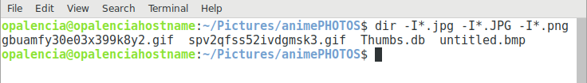

Mostrar carpetas y archivos > dir¶
Nombre del comando: dir
Man page online: https://linux.die.net/man/1/dir
Descripción: Mostrar el contenido de un directorio o carpeta.
Man page local: $ man dir o $ man dir > dir.txt
Instalado por defecto: Sí, al menos en Debian.
Algunas Opciones:
-I --ignore=PATTERN No muestre las entradas implicadas que concuerden con el patrón de shell.
-r, --reverse Orden inverso mientras se clasifica.
-m Llenar el ancho con una lista de entradas separadas por comas.
Ejemplo 1: $ dir -I*.jpg, para este caso el PATHERN es *.jpg, lo que implica que omitira todos los archivos que terminen en .jpg.
Ejemplo 2: $ dir -I*.jpg -I*.JPG -I*.png, este ejemplo es igual que el anterior (omitirá todos los archivos que terminen en .jpg, .JPG y .png), se puede ver que es posible agregar varias opciones en una sola línea.
Ejemplo 3: $ dir -r, mostrará en orden descendente los archivos y carpetas, al usar dir sin argumentos por defecto los ordena ascendentemente.